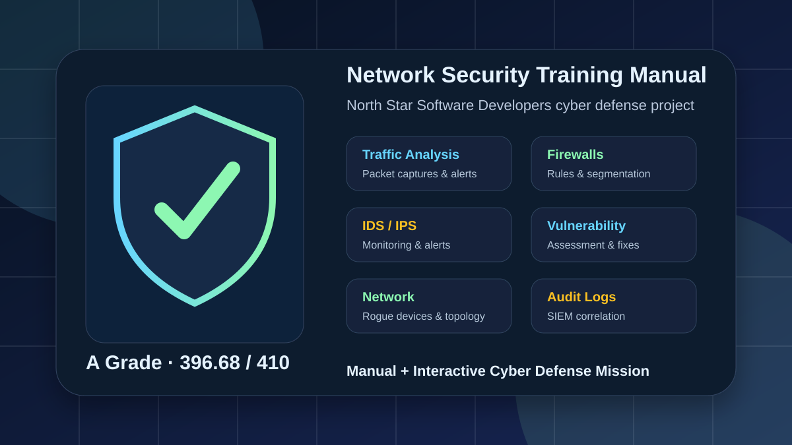
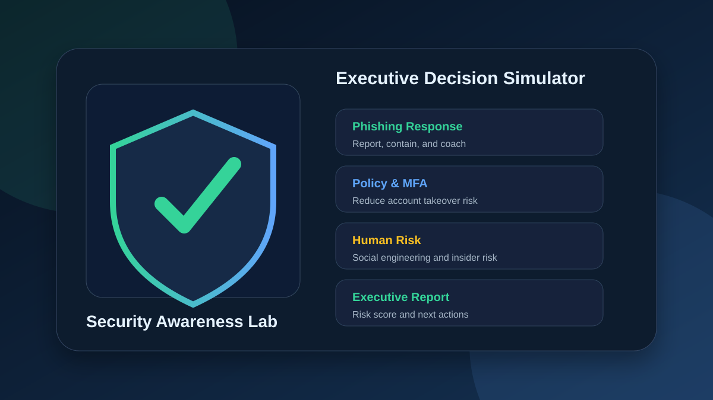
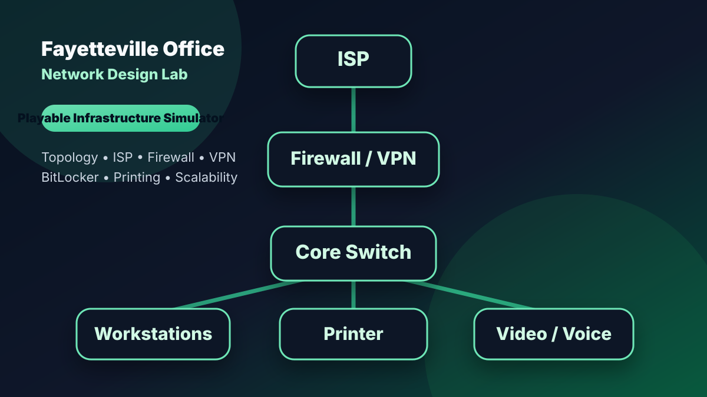
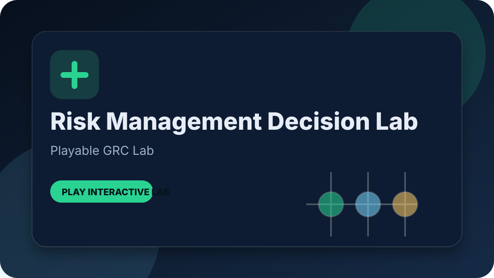
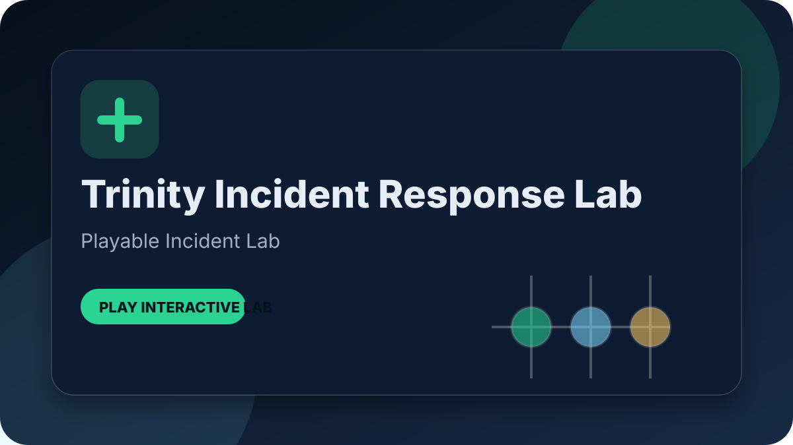
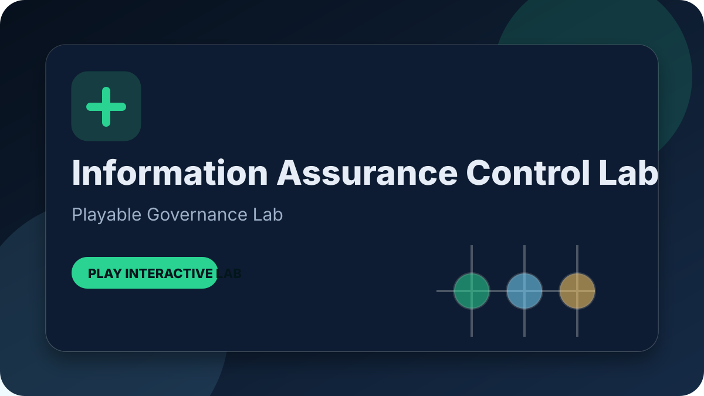
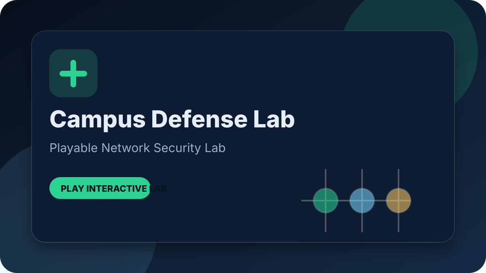

Playable Defense Mission
NSSD Cyber Defense Mission
Interactive version of the North Star Software Developers training manual with clickable security-layer cards, mission story, response flow, approved tools, glossary, checklist progress, and quiz reinforcement.
Cyber DefenseTraining DesignTraffic AnalysisFirewallsIDS/IPSJavaScript

Playable Awareness Lab
Security Awareness Executive Briefing Lab
Interactive executive decision simulator where users make leadership-level choices about phishing, MFA, sensitive data handling, social engineering, insider risk, security metrics, and executive sponsorship.
Security AwarenessHuman RiskPolicyExecutive CommunicationJavaScript

Playable Infrastructure Lab
Fayetteville Office Network Design Lab
Interactive planning simulator based on the Fayetteville office proposal where users make topology, ISP, switching, firewall, BitLocker, VPN, printing, teleconferencing, and scalability decisions.
Network DesignStar TopologyVPNBitLockerISP PlanningJavaScript

Playable GRC Lab
Health Network Risk Management Decision Lab
Decision simulator where users prioritize healthcare risks, HIPAA controls, business impact, continuity, vendor access, and executive risk reporting.
Risk ManagementHIPAABIAGRCContinuityJavaScript

Playable Incident Lab
Trinity Health Incident Response Lab
Incident-response simulator where users contain suspicious access, preserve evidence, coordinate HIPAA review, and brief leadership.
Incident ResponseHIPAABreach AnalysisMonitoringEscalationJavaScript
Playable SD-WAN Lab
Enterprise SD-WAN Architecture Strategy Lab
Network architecture simulator covering dynamic path selection, NGFW inspection, QoS, monitoring, and disaster recovery.
SD-WANNGFWQoSMonitoringDRJavaScript

Playable Governance Lab
Information Assurance Control Mapping Lab
Governance lab where users map assurance goals to access control, logging, incident response, integrity, and continuity controls.
NIST CSFAccess ControlLoggingIRContinuityJavaScript

Playable Network Security Lab
Secure Enterprise Campus Defense Lab
Campus design simulator covering VLAN segmentation, DMZ placement, ACLs, Layer 2 hardening, and validation.
VLANsACLsASADMZLayer 2JavaScript
Playable CTF Lab
NCL Ink Injection CTF Training Lab
Team CTF strategy simulator based on the NCL recap, covering OSINT, PCAP analysis, password cracking, evidence handling, and final push decisions.
NCLCTFOSINTPCAPForensicsJavaScript
 Playable SOC Game
Playable SOC Game
Cyber Threat Sentinel
Real-time cybersecurity learning game where players analyze simulated phishing, network, endpoint, identity, malware, brute-force, and data exfiltration alerts before choosing the right SOC response.
Threat DetectionIncident ResponsePhishingEDRIDSJavaScript
 Playable Packet CTF
Playable Packet CTF
Packet Capture CTF Game
Browser-based cybersecurity training game where players analyze simulated network packets, identify suspicious DNS, HTTP, TCP, ICMP, and SSH activity, and capture five flags across Easy, Medium, and Hard modes.
Packet AnalysisCTFDNSHTTPSSHJavaScript
 Playable Networking Lab
Playable Networking Lab
BusinessNet VLAN Router Lab
Web-based networking and cybersecurity training game where players configure a five-person business network with hardware and phone VLANs, DHCP, router-on-a-stick subinterfaces, trunk/access ports, NAT, default routing, and firewall concepts.
VLANsCisco-style CLIDHCPNATFirewall ConceptsJavaScript
 Playable Firewall Rule Lab
Playable Firewall Rule Lab
Firewall Rule Lab
Browser-based cybersecurity game where players review business needs, build firewall rules, test simulated packets, tune logging and alerts, and learn least privilege, implicit deny, rule order, ACLs, and cloud firewall defaults.
Firewall RulesACLsPCAP-Style TestingDetection TuningJavaScript
 Playable Cybersecurity Game
Playable Cybersecurity Game
Firewall Defender
Interactive web-based cybersecurity game that teaches firewall rules through simulated packets, allow/block decisions, ports, protocols, least privilege, risky services, and default-deny policies.
JavaScriptFirewall RulesPortsProtocolsLeast Privilege
 Playable Database Admin Game
Playable Database Admin Game
SQL Database Troubleshooter
Web-based learning game that teaches database setup, user permissions, service outages, query tuning, backups, and integrity checks across Easy, Normal, and Hard modes.
HTMLCSSJavaScriptSQL ConceptsLeast PrivilegeDBA Troubleshooting
 HTML5 Canvas Game
HTML5 Canvas Game
Arena Zero
Standalone browser-based top-down shooter with weapons, enemy waves, ammo drops, scoring, and no external game libraries.
HTMLCSSJavaScriptCanvas APIGame Loops
 Python / Pygame Game
Python / Pygame Game
Trail Game — Oregon Trail-style Python Project
Survival game with party management, resources, random events, a hunting mini-game, town shop, and JSON save/load.
PythonPygameJSONUI LogicEvent Systems
 JavaScript CLI Project
JavaScript CLI Project
Unwell Toaster CLI
Humorous command-line app with interactive commands, Node.js support, a Windows batch launcher, and a browser version.
JavaScriptNode.jsCLIBatch FileUX Writing
 Python / Pygame Adventure
Python / Pygame Adventure
Legend of Elmwood Ghetto
Zelda-inspired action adventure with overworld exploration, combat, enemy AI, tile maps, NPC interaction, and progression systems.
PythonPygameSpritesTile MapsGame Architecture
 Operations
Operations